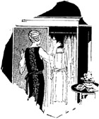

1926—The New-Way Course in Fashionable Clothes-Making
Introduction to Lesson 49
Foreword
If you have any idea whatever of owning your own little dress shop some day, the pages that follow will offer you many valuable suggestions. Perhaps you are planning merely to convert one of the rooms in your home into the equivalent of a dress shop. Or you may be planning to have one of the prettiest shops on Main Street. In either case, you will find just the information you want in the following lessons.
There are chapters prepared especially for the woman who wants a large dress shop—and other chapters prepared for the woman who is planning a small shop. There are lessons that you will find extremely valuable, and other lessons that may not seem to fit into your own requirements at all. It is simply a matter of adapting the lessons that follow to your own particular requirements—to your own plans.
You see, we have spared no efforts in making this book as complete and informative as possible. We have explained clearly and definitely all the correct methods of operating successfully a dress shop whether it is small or large. We have omitted nothing—not even the details connected with the operating a very large and fashionable shop—for even though you may not find this information of immediate practical use, you will want to know about it, so that when a large shop becomes a possibility, you will be prepared to grasp your opportunity.
Do not think that because we have outlined certain plans in the lessons that follow that you must follow these plans precisely as outlined. Perhaps they do not meet your requirements; perhaps they are not suitable. Modify them to suit the particular shop you have in mind. Let your own good judgment be your guide. These lessons have been prepared for the sole purpose of giving you a good general idea of what is essential when one opens a dress shop. There are no definite rules that you must follow—no plans that you must adopt. Instead of adopting them, adapt them to your particular requirements—and your shop is bound to be a success.
Incidentally, your teachers are always glad to help you with any of your problems. If there is anything in connection with your dress shop that you do not entirely understand, any little detail with which you would like help, do not hesitate to write. Your teachers will be glad to give you any information within their power.
By Way of Introductions
There can certainly be nothing more satisfying, more to be desired, than an interesting, worth-while career and an income that makes one independent. Particularly is this true of the married woman who finds she has to stint and economize when her taste demands certain luxuries. It is true also to the younger woman who feels within her the urge to engage in some profitable work that she will enjoy and will earn her a substantial income.
To these women, the fashionable dress shop offers a splendid opportunity. It is not easy to own and operate successfully a shop of the kind we have in mind. It requires a certain amount of business knowledge, a thorough knowledge of dressmaking in all its phases, good taste and originality—and above everything else, a sense of values.
Yet, all these can be acquired. With a little study and sincere effort you can learn exactly how to go about opening a dress shop—how to purchase your stock and supplies, how to get and keep customers, how to keep your business on a paying basis. That is the purpose of the lessons that follow—to teach you everything necessary regarding the business of selling dresses in your own little shop. Each lesson covers some phase of the business. Nothing has been omitted, nothing left to your imagination. If you sincerely wish to have a profitable, attractive dress shop, the lessons that follow will show you how.
Do not attempt to read the whole book through at one sitting—and then expect to open a shop that will be successful. Study the lessons just as you did the dressmaking lessons. Take a few pages at a time, and in consecutive order. Jot down notes in a notebook or on a pad. Making notes in this way always impresses a fact upon your memory. Read over and over again those parts that particularly interest you and that you feel you are not certain about.
If there is anything in this book you do not understand, anything regarding the opening and successful running of a dress shop, any statement you do not understand, or anything about which you are in doubt, do not hesitate to write to us for assistance. Remember, your Life Scholarship entitles you to the advice of our experts. We want you to be a success—and we want to do everything in our power to make you a success.
The Newer Opportunity for Women
Before anything else, you must know exactly how to approach your lessons and how every woman is the moulder of her own life, the master of her own destiny. If she wishes to step away from the commonplaces of life, into a broader and more congenial environment where she will meet more people and have greater opportunities for success, there should be no one to stand in her way. If she feels the desire for independence, if there are luxuries that are being denied her, she has every reason in the world to reach out and get them for herself.
There was a time when women foolishly assured themselves that their only place was in the home. But that day has passed. Never before have there been so many women successfully engaged in business as there are today—women in all classes of life, from the busy housewife to the society woman—women who have found at last the happiness that independence and pleasant work bring. It is no longer necessary to long for a career, or an independent income—you can have it.
Of course, the answer to your demand for a career, or a profession, is dressmaking. Perhaps you are not content just to make dresses for your friends and neighbors in your own home, dividing your time between your household duties and your clothes-making. Perhaps your dream is to have a smart, fashionable dress shop with delightful creations on display, with a splendid patronage and a still more splendid income. Then you will be able to pay someone to do your housework; you will be able to employ people to do the details of the sewing and cutting. You will be the clever modiste—the creator of the styles, the designer of the modes, the owner of the shop!
A pretty picture, is it not? A charming dream. But the picture can be made real, the dream can be made to come true. If it is your ambition to have a dress shop, we want to do everything possible to help you have the kind of dress shop that will be an absolute success, that will be a constant source of pleasure and profit, to you. It is with that aim in view that we have prepared the following lessons, sparing no expense or effort in making them as complete, authoritative and up-to-date as it is possible for them to be.
The dress shop, as a business, is ideally suited to the woman. There is perhaps no other business so well adapted to her requirements. Operating a dress shop is dignified, interesting, profitable. The work becomes fascinating the more you are in it. The returns are substantial. There is always something new, always something interesting, always something to keep you happily occupied.
It is only necessary that you start right, and continue along the right lines. Mistakes are expensive. You can start in a modest way, if you wish, with little capital and little stock, but if you start right and keep progressing your business will grow until its proportions will amaze you. It is inevitable; you cannot help succeeding if you proceed in the correct manner. But you must avoid the mistakes that wreck so many businesses.
Some Preliminary Requisites
Let us see exactly what we must consider first when we contemplate our dress shop. Of paramount importance, if course, is the amount of capital that can be placed into the business. Everything else hinges, to some extent, around this point. If the capital is limited, we suggest that for the time being the home be converted into a shop. Two rooms will be sufficient. Even one room will serve the purpose if necessary. But if one has sufficient capital to attempt taking a little shop and furnishing it correctly, then by all means that should be the choice.
Of course, you may be planning just to make dresses for your customers as they are ordered. You may be planning to use one room of your home for workroom and fitting-room. Under these circumstances, you will not require much capital. Just enough to start you with your first dress is all that is necessary. You will be able to reinvest your profits to earn new profits.
However, you may some day want to branch out and open an attractive little shop. You will want to know exactly how much capital you need, how to furnish the shop, how to get and keep customers. That is the purpose for which the following lessons are written. Whether you intend to open a small shop, or use your home and make dresses just as they are ordered, you should study these lessons and consult them when making your plans.
When computing the necessary amount of capital, first figure out carefully the number of garments that will have to be made to realize a certain profit. This profit must be sufficient to cover the overhead expense—which means, the expense of rent, light, heat, insurance, etc. First figure what your expenses will be, if you prefer to do it that way, and then see how many garments must be made to realize a profit and cover that expense. You must be absolutely honest with yourself. Do not attempt to carry greater expense than your shop can stand. It is not wise to invest one's last penny in a shop of any kind, for one never knows what may happen, and it s very easy to lose everything if you haven't got a hundred or two hundred dollars when you need it at some critical point in your business.
It is possible to start a dress shop on as little as $500, and more can be added to this regularly from the profits to increase the business. $1000 is a safer amount to have available, and with $2000 you can open an attractive dress shop indeed. There is no limit to the amount you can put into your business, but we strongly advise you against investing indiscriminately at first. Start small and increase your business as you progress.
Having determined upon the capital, it is now necessary to select both a location and a name for your business. These important features deserve a special lesson, as do also the subjects of furniture, stock materials, etc. which are also primary considerations to discuss when one contemplates opening a shop. In the next lesson we will discuss the name and the location for your dress shop.